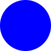
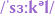

Circle
Koło
Figura geometryczna, matematyczny koncept abstrabcyjny, który odnosi się do kształtu nie posiadającego żadnych kątów
oraz mający taki środek, że z dowolna poprowadzona przez niego linia przetnie obwód dokładnie 2 razy, a odcinek
pomiędzy 2 powstałymi punktami zawsze będzia miał tą samą długość niezależnie od odchylenie pierwotnej linii
Opis na stronie MATH.EDU.PL
Wyraz Koło tworzy samodzielną rodzinę wyrazów o temacie Koł
Przykłady innych wyrazów z rodziny:
